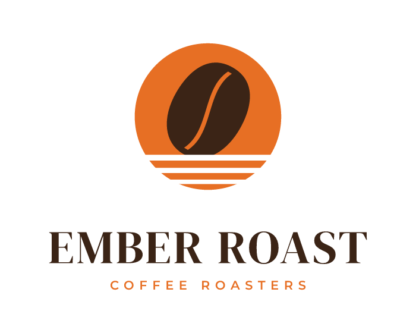
Rising sun + coffee bean; warm retro horizon lines.
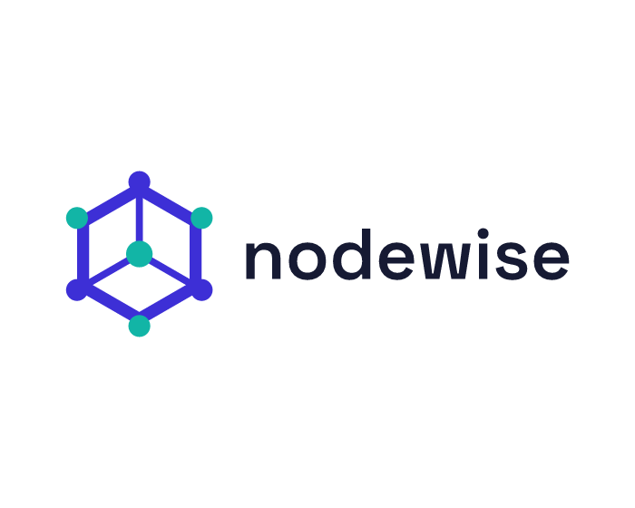
Connected-node hexagon for a data integration startup.
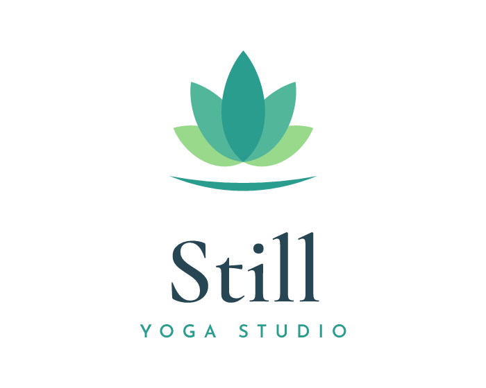
Layered lotus petals over a calm water line.
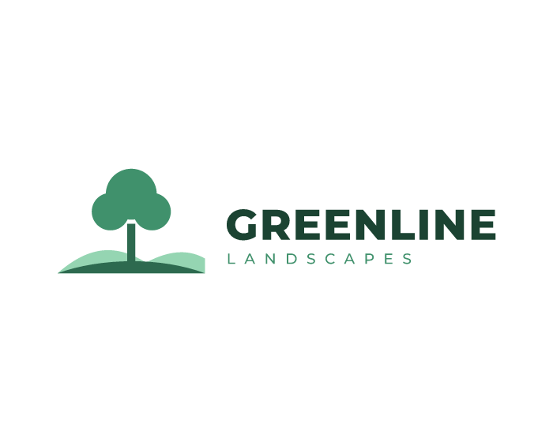
Tree and rolling hills, bold horizontal lockup.
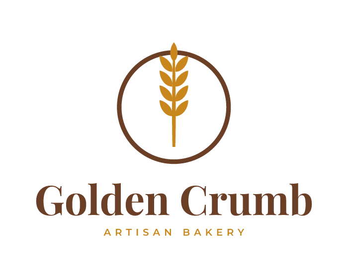
Wheat stalk inside a bakery stamp ring.
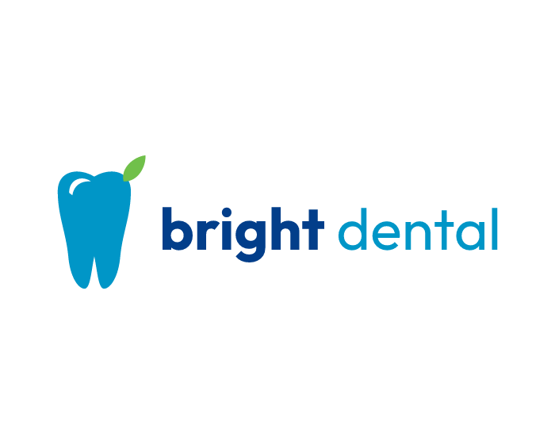
Friendly tooth mark with a fresh leaf accent.
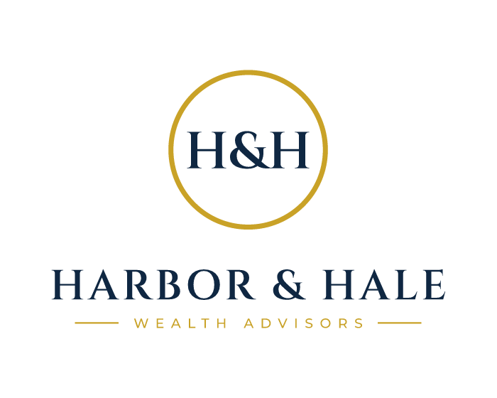
Classic serif monogram for a private advisory firm.
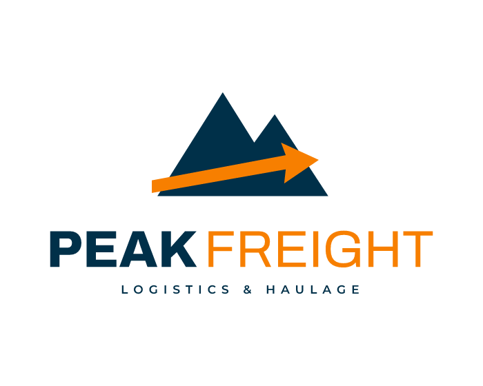
Mountain peaks with a forward-moving freight arrow.
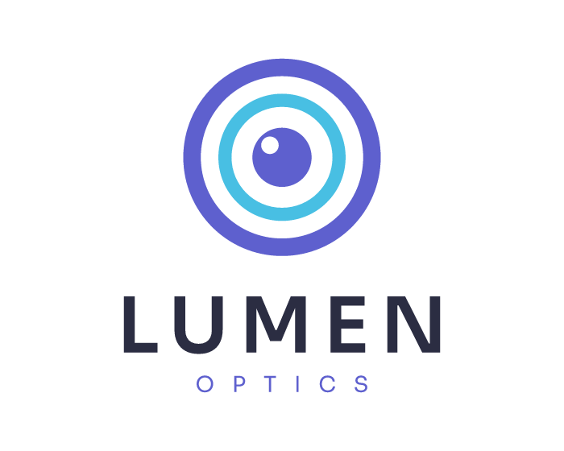
Concentric lens rings with a light highlight.
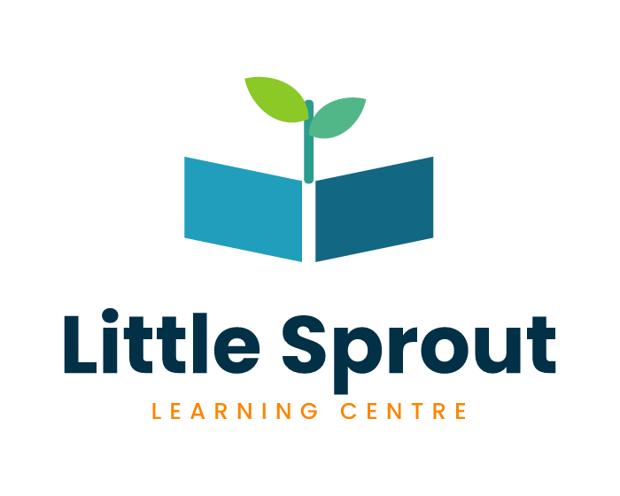
Open book sprouting new leaves.
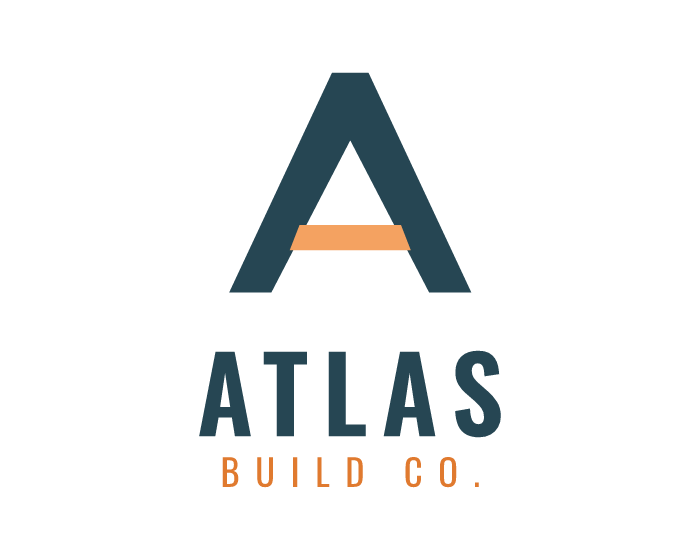
A-frame monogram with a structural beam.
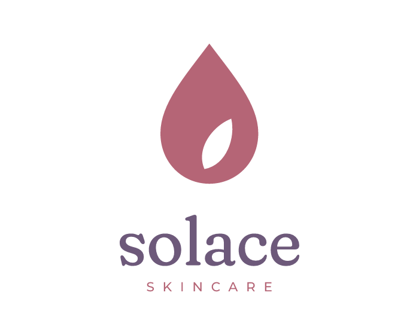
Soft droplet with a negative-space leaf.